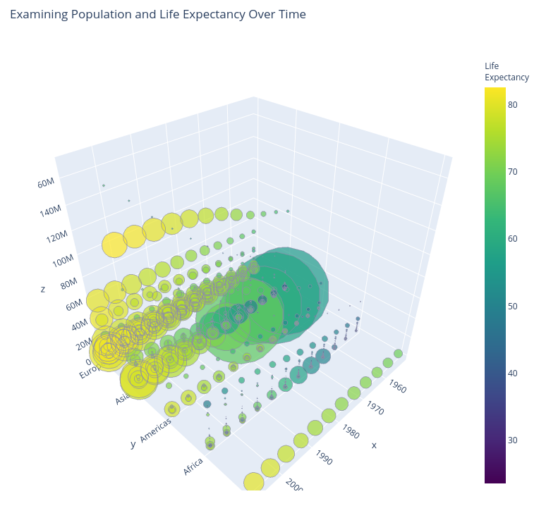

#
plotly
Here are 893 public repositories matching this topic...
firasm
commented
Mar 7, 2020
In the dash tutorial, this is the recommendation on how to install dash:
In your terminal, install several dash libraries. These libraries are under active development, so install and upgrade frequently. Python 2 and 3 are supported.
pip install dash==1.8.0
The current dash version is 1.9.1
Is this intentional ? I'd send a PR, but I assume the d
Open Machine Learning Course
python
docker
data-science
machine-learning
math
algorithms
numpy
scikit-learn
plotly
pandas
seaborn
ipynb
scipy
data-analysis
matplotlib
vowpal-wabbit
kaggle-inclass
-
Updated
Mar 30, 2020 - Python
10
emmanuelle
commented
Nov 28, 2019
Most items coming from questions on the community forum
- example of shape or annotation covering several subplots thanks to
xref='paper'. Also the shapes and annotations tutorial should link to each other. - add px example in 2d density page, links between 2d density and 2d density contour pages, remove gremlin.
- orthographic projection example in 3d axes tutorial (or 3d cam
christabor
commented
May 10, 2017
What likely needs to happen:
- Docs moved inside of package (OR linked via setuptools)
- Docs read and imported via python
- Docs then parsed and available on a per-widget basis.
The ultimate goal of the above is so that there is never any disconnect between docs and UI. It should always stay in sync.
ryancerf
commented
Aug 31, 2019
Use mvn release:prepare to build the docs and copy them to the /docs directory
daattali
commented
Aug 10, 2019
Many times when I search for some R plotly documentation, I come across a page with a broken shiny app, which essentially renders that page useless. I usually ignored it, but I realize now that it would have been much more productive to make note and report it! So I'll start now :)
The app here doesn't exist: https://plot.ly/r/shinyapp-linked-click/
julioasotodv
commented
May 30, 2018
Hi,
First of all, thank you all for Falcon. It's awesome.
However, it looks like the Apache Drill connector only works with S3 buckets. Nonetheless, Drill itself is able to query from lots of other places (such as a local filesystem, HDFS, MongoDB...).
Adding generic support for Apache Drill (without the need for S3 credentials) would be great. It would expand Falcon capabilities a lot
A curated list of awesome Dash (plotly) resources
-
Updated
Jan 17, 2020 - Python
Open
latex widget
jwkvam
commented
Apr 4, 2018
For example: https://github.com/talyssonoc/react-katex
awalther
commented
May 16, 2019
Minimal example below (added marginal=rug to show where the bars supposedly should land):
import plotly_express as px
fig = px.histogram(
px.data.iris(),
x='petal_width',
color='species',
log_x=True,
marginal='rug',
)
fig
michaelbabyn
commented
Dec 11, 2019
App name
dash-mapd-demo
Description of antipattern
Currently a new db connection is being made in every callback, and sometimes multiple times per callback. We should implement a connection pool (using sqlalchemy is probably easiest) and use that instead to improve performance and to demonstrate be
nicolaskruchten
commented
Jul 10, 2018
E.g. in the "Quick Start" section. The problem is that in the "State Management" section we show developers how to "close the loop" and if they use literals as props things will infinitely-loop!
Conclusion: we should scrub our docs and examples of the use of literals :(
See also #87
emmanuelle
commented
Dec 25, 2019
Not sure whether this issue should be here or in ploty.py, since it depends on the solution.
It would be nice to have links to the API doc https://plot.ly/python-api-reference/ in the code blocks of the Python tutorials, for the classes and functions of plotly.py. This is something that projects using sphinx-gallery do, see for example https://scikit-learn.org/stable/auto_examples/plot_john
Easy to use Python API wrapper to plot charts with matplotlib, plotly, bokeh and more
-
Updated
Nov 2, 2019 - Python
banesullivan
commented
Jun 24, 2019
Would it make sense to implement a get_cmap function as colorcet.cm.get_cmap that could override Matplotlib's so that external libraries using MPL's get_cmap could just replace it with Colorcet's get_cmap if Colorcet is available at runtime? This would make interfaceing with Colorcet super easy for other libraries already leveraging MPL's colormaps.
I'm thinking that this function would
Renderers and renderer extensions for JupyterLab
-
Updated
Mar 2, 2020 - Jupyter Notebook
theimo1221
commented
Feb 17, 2018
An issue to collect data and tasks needed for adding binance
-
Decrease Callback/ Load Amount to 1 in #40
-
Analyze compatibility
Needed changes in Data call?
Needed changes in Data storage (Multiple times same pair e.g. "ETH-USD") -
Discuss form of presentation
Original:Send all data to client, and hide/ show selection on clientside with js?
Update: Sending all data s
liufuyang
commented
Feb 24, 2020
Syrrokz
commented
Sep 17, 2019
The master-source as of 17.09.2019 is missing a requirement and has a grammar-error.
Requirements.txt is missing "textblob", to install it over pip simply type
pip install textblob
or click here get informations how to install it or simply open requirements.txt and simply add
textblob
into a new line.
Under twitter_stream.p
Marc-Andre-Rivet
commented
Feb 5, 2020
The input element inside the filter cell can't inherit its text color from the parent <th> as it's set explicitly (https://github.com/plotly/dash-table/blob/dev/src/dash-table/components/Table/Table.less#L551)
mjkallen
commented
Sep 4, 2019
I have two comments related to the documentation of htmlButton:
- htmlButton is documented in the core components, which makes sense to me, but it is actually part of the dashHtmlComponents R package. Maybe add a link from the documentation of the HTML components?
- The documentation for htmlButton states that its initial value is `NUL
chriddyp
commented
Mar 25, 2020
3 spaces for the indentation. 4 spaces and it's a code block, 2 spaces and it's just part of the parent
3. Here we just define our app inside a test function. All the rules
still apply as in your app file.
4. We normally start the test by calling the `start_server` API
from `dash_duo` (you can use `dash_br` for an hosted Dash App, and
write `dash_br.server_url = "Hosted URL"` to star
Open-Source Tutorial For Analyzing and Visualizing Cryptocurrency Data
python
data-science
tutorial
bitcoin
ethereum
plotly
jupyter-notebook
data-visualization
cryptocurrency
data-analysis
-
Updated
Jan 11, 2020 - Jupyter Notebook
Data exploration glue
visualization
python
data-science
jupyter
plotly
pandas
python3
bokeh
perspective
jupyterlab
matplotlib
jupyter-widgets
jupyterlab-extension
qgrid
ipysheet
-
Updated
Feb 2, 2020 - Python
NathanGuy14
commented
Apr 21, 2018
In ggplot2, the alpha values of each cell in a heatmap can be set individually, using the aes() function. Can the same be done in heatmaply?
ghost
commented
Jan 21, 2018
In the tutorial https://plot.ly/matplotlib/histograms/ tutorials matplotlib.pyplot is imported as plt. But during plotting the histogram we are usintg pyplot which gives the error of "pyplot not defined".
lianos
commented
Feb 27, 2020
I was poking around the codebase to see if there was any guidance on how to respond to plotly hover, click, etc. events when using iheatmapr with shiny.
I landed on the ?iheatmapr_event man page, which alludes to having an exemplar shiny app in its Examples section:
## Not run:
shiny::runApp(system.file("examples", "shiny_example", package = "iheatmapr"))
## End(Not run)Tutorials on visualizing data using python packages like bokeh, plotly, seaborn and igraph
-
Updated
May 14, 2018 - Jupyter Notebook
edaviz - Python library for Exploratory Data Analysis and Visualization in Jupyter Notebook or Jupyter Lab
interactive
plotly
jupyter-notebook
eda
pandas
data-visualization
seaborn
data-analysis
matplotlib
data-exploration
pyhon
altair
project-jupyter
qgrid
edaviz
data-sciene
exploratory-data
-
Updated
Nov 20, 2019 - Python
Improve this page
Add a description, image, and links to the plotly topic page so that developers can more easily learn about it.
Add this topic to your repo
To associate your repository with the plotly topic, visit your repo's landing page and select "manage topics."
Transparency appears to be enabled by having different
marker.sizes!View from our docs:
